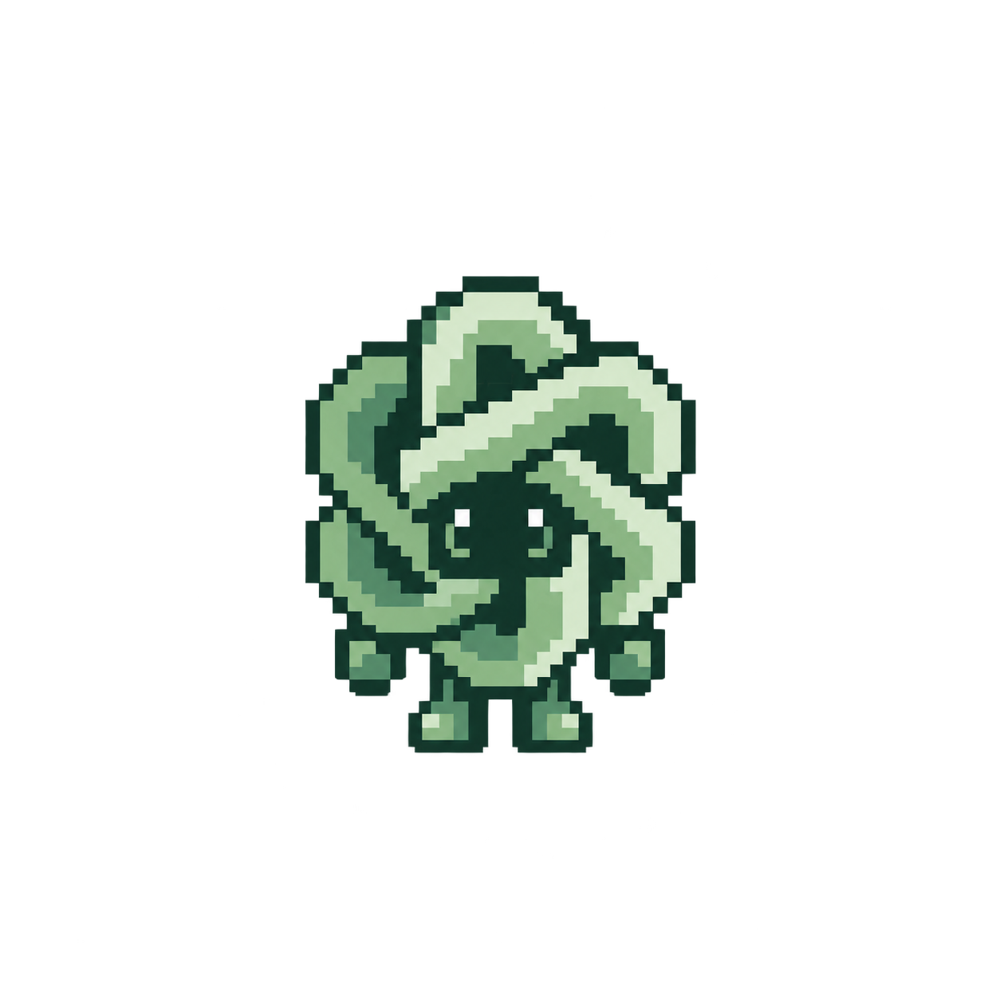
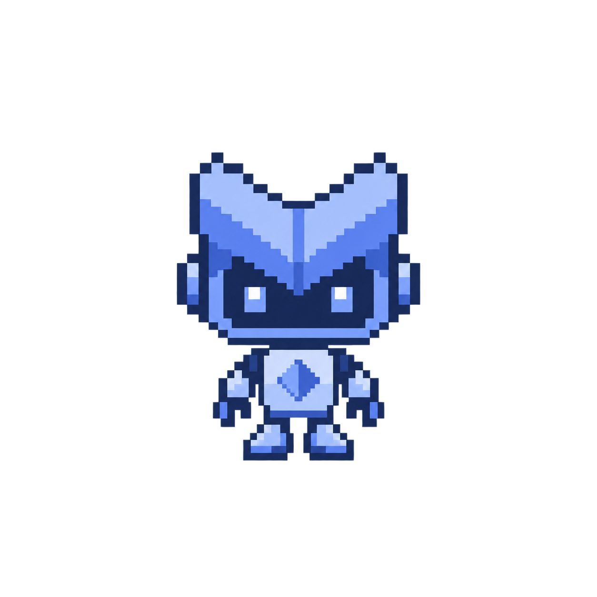

Bring a repo. Find a better recipe.
Agents adapt your training code, then explore better model designs and training strategies.
A simulated recipe search. Nothing is submitted or trained.
From code to evidence
01Adapt
↓Connect model, data & loss.
02
↓Research, build, test, repeat.
03Understand
Review the evidence with ARIA.
This walkthrough follows architecture and training-recipe search.
Plan & evaluateRetain & advanceRepair & retry
Loading diagram…
We trace logs through Weights & Biases and use ARIA to analyze results and identify errors.
Read failure logs ↗Success logs ↗Training runs+Agent traces→ARIA review

Run→Evaluate→
Change